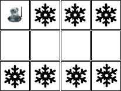

Configuração do ambiente
Para executar esta atividade você terá que fazer o fork do projeto https://github.com/Insper/ai_code.
Recomenda-se fortemente que todo estudante faça estas atividades em sua máquina. Os problemas podem ser discutidos em grupo, no entanto, cada aluno precisa ter a sua própria implementação.
Na pasta src deste projeto você irá encontrar diversos arquivos python. São os arquivos desta pasta que você irá utilizar neste exercício.
Exercício: Aspirador de Pó
Considere o exemplo do aspirador de pó. Uma possível solução está implementada no arquivo src/VacuumWorld.py. Considerando esta implementação, execute as seguintes ações:
-
acesse o diretório src e execute o comando
python VacuumWorld.py. Qual foi a resposta fornecida pelo programa? O que esta resposta representa? Por que as respostas são diferentes? -
Acesse o código
VacuumWorld.py. Quais são os métodos definidos na classe VacuumWorld? Descreve o que você acredita que cada método realiza. -
Vá até a função
main()do arquivoVacuumWorld.py. Esta função faz uso de algum algoritmo de busca? Quais? -
Altere o estado inicial e o estado objetivo descritos no arquivo
VacuumWorld.py, execute novamente o comandopython VacuumWorld.pye veja o que acontece. -
Execute o comando
pytest test_VacuumWorld.py --capture=tee-sys1. O que aconteceu? Você sabe explicar? Você saberia adicionar mais uma função de teste no arquivotest_VacuumWorld.py?
O que são algoritmos de busca?
- Algoritmo de Busca em Largura
- Algoritmo de Busca em Profundidade
- Algoritmo de Busca de Custo Uniforme
- Algoritmo de Busca em Profundidade Iterativo
Para entender melhor cada um dos algoritmos de busca, acesse o material sobre algoritmos de busca.
Espaço com 3 quartos
Vamos implementar um Aspirador de Pó com 3 quartos? Três quartos lado-a-lado (esquerda, centro e direita)?
Para esta atividade já temos um código pré-pronto: VacuumWorld3Room.py. Neste código falta completar o código de alguns métodos da classe.
-
Complete os métodos da classe e execute os dois algoritmos que estão na função main(): Busca em Largura e Busca em Profundidade. Liste as soluções encontradas por ambos os algoritmos.
-
O arquivo
SearchAlgorithms.pyimplementa diversos algoritmos de busca, inclusive o BPI. Altere o código do arquivoVacuumWorld3Room.pypara executar também o algoritmo de busca em profundidade iterativo (BPI). Qual foi o resultado encontrado pelo algoritmo BPI para este problema? Foi igual a outro resultado já apresentado?
Aspirador de pó em uma casa configurável
Que tal implementar um aspirador de pó que consegue atuar em qualquer casa retangular?
Utilize como exemplo o arquivo src/ProblemSpecificationExample.py para implementar a classe VacuumWorldGeneric.py. O método main da classe VacuumWorldGeneric.py deve receber um arquivo texto que descreve a situação do ambiente e as posições do robô como parâmetros. Por exemplo, para o seguinte ambiente:

O seguinte arquivo de configuração será entregue:
0;1;1;1
0;0;0;0
1;1;1;1
onde 0 significa limpo e 1 sujo.
E o seguinte comando deve ser executado:
python VacuumWorldGeneric.py configuracao.txt 0 0
As ações que o robô (agente) sabe executar são:
- esq: ir para a esquerda;
- dir: ir para a direita;
- baixo: ir para baixo;
- cima: ir para cima;
- limpar: limpar o quarto onde está.
Ao executar o comando acima, o programa deverá gerar uma sequência de ações que fará com que o robô saia do estado inicial e chegue em um estado final válido. Um estado final válido é um estado onde todos os quartos (quadrados) estão limpos.
Uma sequência de ações válida para resolver o estado acima é:
esq; limpar; esq; limpar; esq; baixo; baixo; limpar; dir; limpar; dir; limpar; dir; limpar
Um outro exemplo
Considere um novo exemplo:

Para este exemplo o arquivo de configuração precisa ter este conteúdo:
0;1;1;1
0;0;1;1
1;1;1;1
E a chamada para o programa:
python VacuumWorldGeneric.py configuracao.txt 2 3
O programa que você irá implementar não precisa se preocupar com a validação dos dados de entrada. Assume-se que os dados de entrada estão corretos, por exemplo, a posição do robô é uma posição válida.
A única tarefa que o programa deve fazer é se existir solução então retornar uma sequência de ações ótima para o problema. Se não existir solução então informar que não existe solução.
Formato de entrega
Para a implementação e entrega deste último exercício nós vamos utilizar o Github Classroom. O link para o enunciado é este aqui https://classroom.github.com/a/PVBTYkS_. Através deste link você consegue baixar o repositório e começar a sua codificação.
Sugere-se olhar o arquivo de testes src/test_VacuumWorldGeneric.py para entender quais funções são demandadas pela sua implementação. Sugere-se também antes de submeter a sua solução, executar este arquivo de testes na sua máquina local.
Prazo para a entrega: 01/09/2022 até às 23:00 horas.
-
Se
pytest test_VacuumWorld.py --capture=tee-sysnão funcionar na sua máquina, executepytest test_VacuumWorld.py --capture=no. ↩